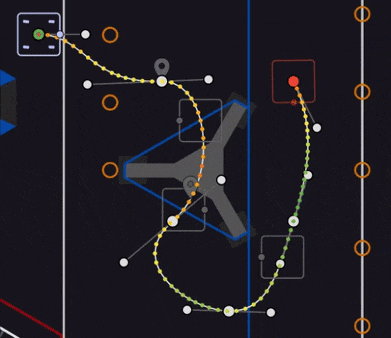

Bachelor of Arts in Computer Science
Texas A&M University, College Station, TX
Minor in English
DATE_RANGE: Aug 2023 - May 2027 | STATUS: IN_PROGRESS
Technical Advisor Intern
Scale AI | November 2024 - Present
• Analyzed large datasets with Google Deepmind researchers on ARC-AGI dataset
• Evaluated datasets for Humanity's Last Exam - solving mankind's hardest problems
STATUS: CURRENT | CLEARANCE: ACTIVE
Robotics Researcher
Texas A&M University | May 2025 - August 2025
• Developed multi-agent task allocation algorithm for warehouse optimization
• Simulated procedures using Gazebo and ROS2 for practical implementation
ACHIEVEMENT: ALGORITHM_PATENT_PENDING
Software Engineering Intern
Daikin North America | May 2023 - August 2023
• Built MVC administrative app processing 20+ years of historical AC data
• Engineered Python scripts for S3 data retrieval and AWS Lambda integration
DATA_PROCESSED: 20TB+ | EFFICIENCY: +300%

David currently attends Texas A&M University as a junior at the time of this writing. He studies computer science, and is a part of many organizations for both academic and social reasons. In an attempt to find his softer and arguably unproductive side, he has decided to make a last minute addition to minor in English. He doesn’t believe it will amount to much, but he loves reading so much he decided that independent study wasn’t enough.